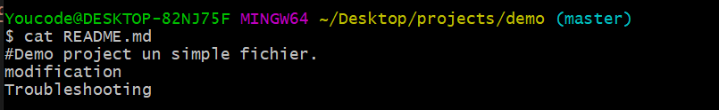

#1 : First Step : Immersion
- Définissez git en quelques mots ?
Git est un logiciel locale de gestion de versions. - Expliquez le fonctionnement du fichier caché « .git ».
c'est lui qui donne l"autorisation au git bash pour appliquer les commande git sur les fichier - Sur votre bureau créez un répertoire nommée « /projects ». >

- Créez un Repository Local sous le nom « /demo ». / Vérifiez le statut du répertoire « /demo ».
-
Expliquez le commentaire.
le message afficher apré avoir verifier le status du repertoire montre qu'il ya auqu'un fichier a enregistre et qu'on doit copier ou crée des fichier - Créez le fichier README.md et ajouter la ligne suivante : ‘#Demo project un simple fichier’.
- Faites le stagging et le commiting avec un commentaire.
#2 : Second Step : La découverte
- Déplacez-vous dans les fichiers de configuration « .git ».
- Tapez Ls –al
- Expliquez les clauses suivantes : HEAD, LOGS, BRANCHES
HEAD : definie la branch actuele
LOGS :
BRANCHES: - Retournez vers votre Repo et créez le fichier « Licence.md ».
- Faites-le Commit

- Affichez les fichiers traqués.
:3 : third step : Historique
- Affichez le dernier commit sur une ligne en ajoutant l’option d’affichage de la hiérarchie de la branche, avec les commit et leur branche aussi
- Créez un alias de la commande précédente le nom de l’alias est : historique
- Affichez la liste des alias

- Affichez l’historique des commit du fichier README.md avec l’alias.

Fourth Step : Excluding files
- Renommer le fichier Licence.md à Licence.txt
- Faites le stagging avec mise à jour (ne pas faire « git add . »)

- Faites-le commit.
Supposons que nous développons sur notre plateforme, surement on a des fichiers qu’on veut exclure de notre arborescence du repository Local
- Créez un fichier nommé application.log
- Ne faites pas le stagging mais créez un fichier nommé « .gitignore »
- Sur le fichier .gitignore Ajoutez la ligne suivante « *.log »

- Faites le stagging et le commit
- Qu’est-ce que vous constatez ?
on contate que les fichier avec l'extention .log n'ion pas etait pris en compte dans le commit car il sont ajouter au fichier .gitignore
fifth Step : Branching and Merging
Introduction : un petit rappel, on a trois types pour faire le merge :
The fast forward merging
The manual
The automatic
- Modifiez le fichier README.md
- Ne faites pas le commit
Créez une branche pour la modification du fichier README.md du nom ‘updates’
- Faites le stagging et le commit en une seule ligne.
- Affichez l’historique avec l’alias
- Qu’est-ce que vous constatez ?
On constate que la commande affiche l'historrique effectuer dans la branche master et la nouvelle branche updates - Retournez vers la branche Master.
- Affichez l’historique avec l’alias
- Qu’est-ce que vous constatez ?
on constat que la commande git historie affiche l'historique des 2 branche au méme temps quoi qu'en soit sur la bra,che master ou sur la branch update - Maintenant faites le merge.
sixth Step : Conflict Resolution
- Créez une branche avec le nom ‘BAD’
- Modifiez le fichier README.md et ajouter la ligne ‘Trouble’
- Faites le stagging et le commit en une seule ligne.
- Switchez faire la branche principale ‘master’
- Maintenant modifiez le fichier README.md et ajoutez la ligne ‘Troubleshooting’
 - Stagging/commiting avec commentaire ‘branche bien faite’
- Oups !! corriger le commentaire du dernier commit
- Affichez l’historique
- Qu’est-ce que vous constatez ? expliquez l’objectif de ce petit scenario ?
On constat que tt le commit reste enregistrer sur tt type de branches - Faites le merge de la branche ‘BAD’

- Expliquez le message ?
le message indique que ya un conflit de merge qu'on doit me resoudre avant de commit - Exécutez la commande suivante : cat README.md ? Expliquez ?
ca montre la difference entre les 2 branche - Tapez la commande « git mergetool » ? qu’est-ce que vous constatez ?
On constat que
seventh Step: merge tools
- Sur git bash tapez la commande : git config –global –list
- Git config –global merge.tool p4merge
- Git config –global mergetool.p4merge.path “lien d’installation” ( .exe)
- N’oubliez pas de bien configurer le prompt ? devinez comment ?
- Tapez la commande git mergetool
- Analysez ce que vous voyez ? et expliquez la plateforme ouverte en temps réel ?
c'est un platforme qui donne les 2 modification effectuer sur les 2 branch et donne la possibiliter de choisir quelle modification choisir pour le merge
eigth Step: Challenge
- Sur le fichier .gitignore ; écrivez une clause pour rejeter les fichiers indésirables et redondants
- On laisse que les fichiers : licence.txt Readme.md .gitignore ( exemple *.log pour application.log)